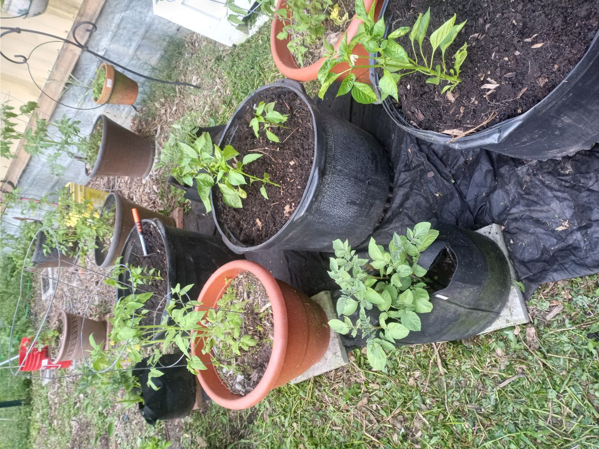

Welcome to My Garden
This site documents my small-space gardening journey, focusing on container gardening, seasonal growth, and learning through trial and error.
Explore my projects, get started guides, and see how you can grow your own food even in limited space.